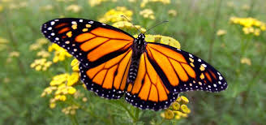

holaaaa a todos

Las mariposas adultas tienen antenas, ojos, tres pares de patas y un duro exoesqueleto. Su cuerpo se divide en tres partes: cabeza, tórax y abdomen. ... En el tórax se concentran todos los músculos de vuelo que controlan las alas y las patas. El abdomen alberga el aparato digestivo, excretor y reproductivo de la mariposa.